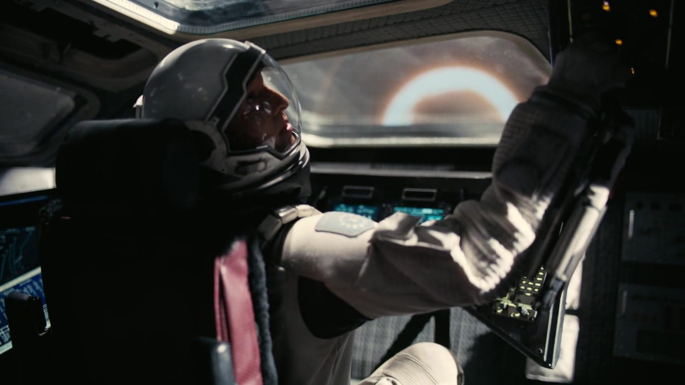
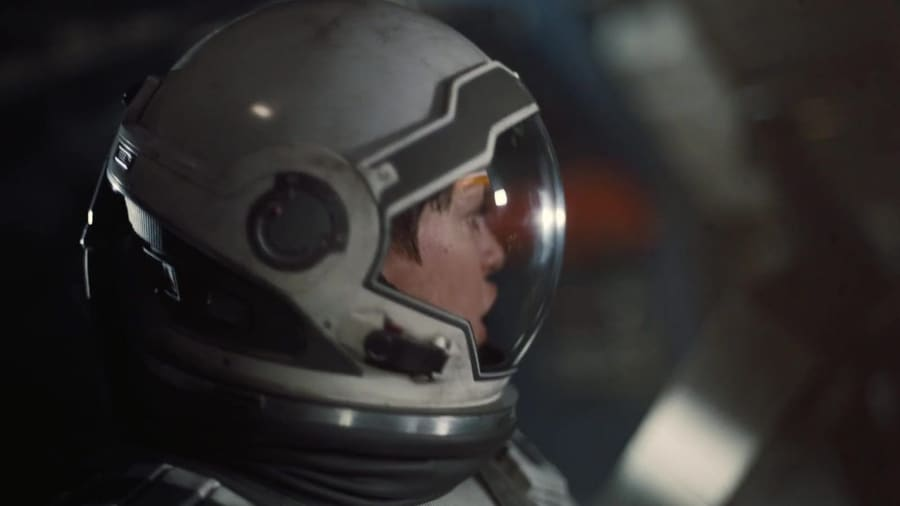
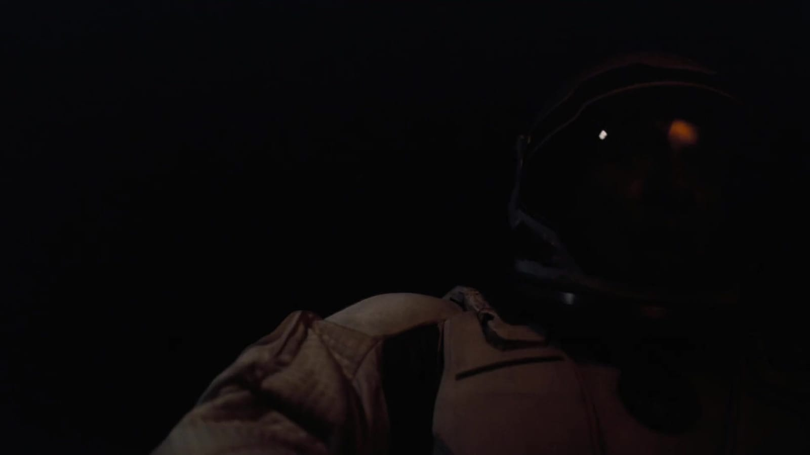
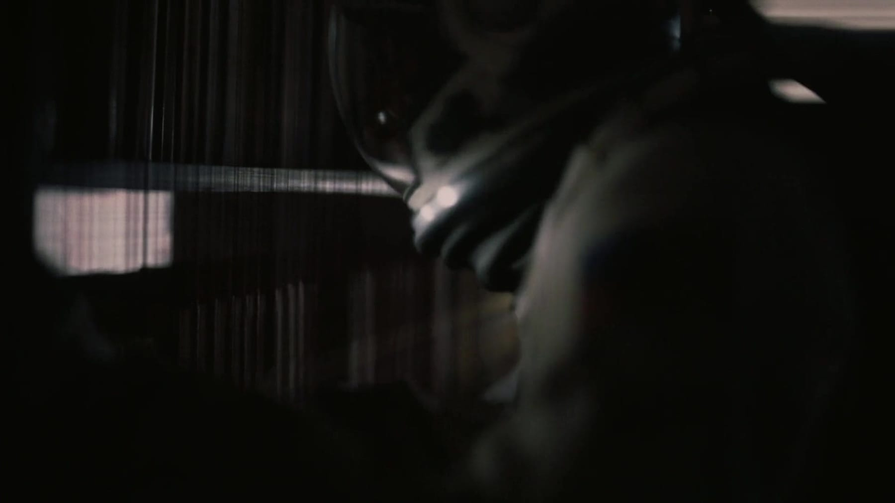
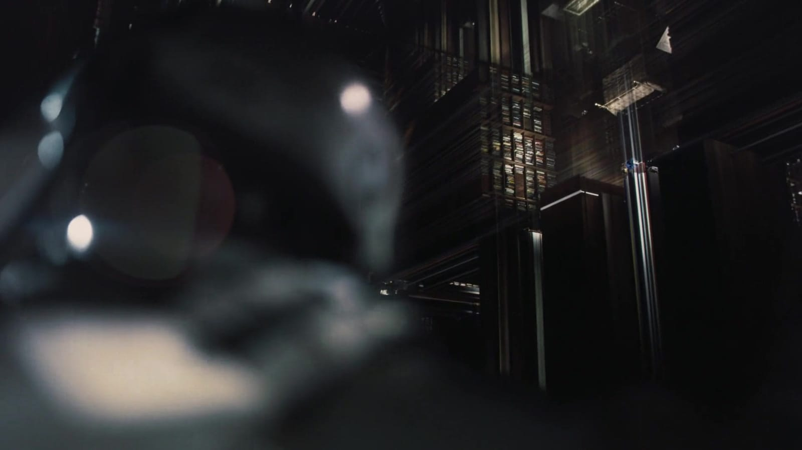
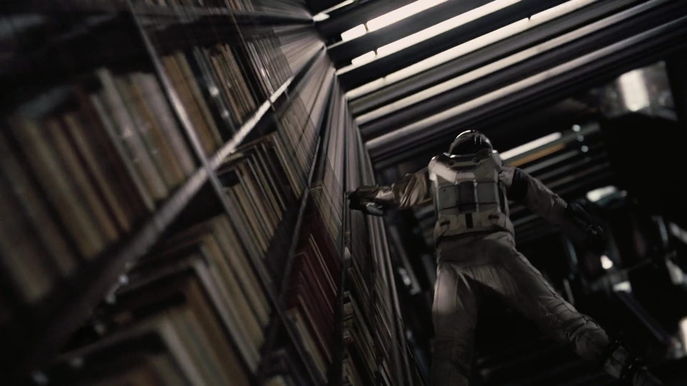
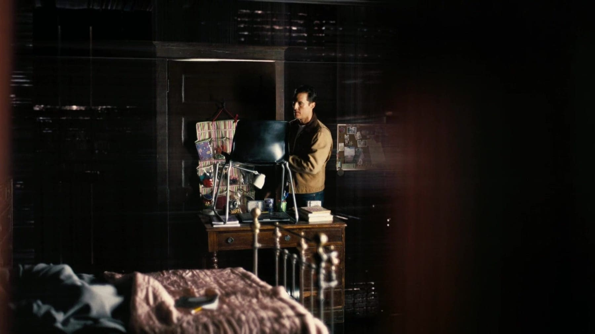
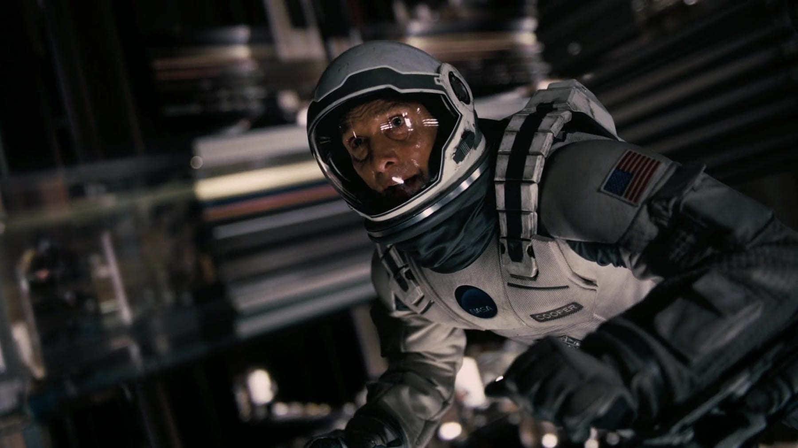
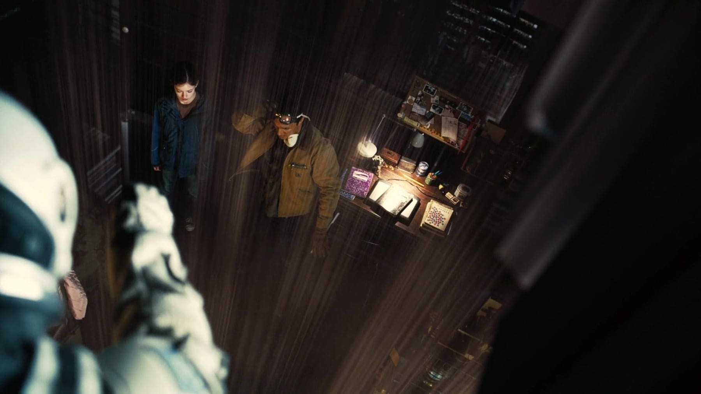
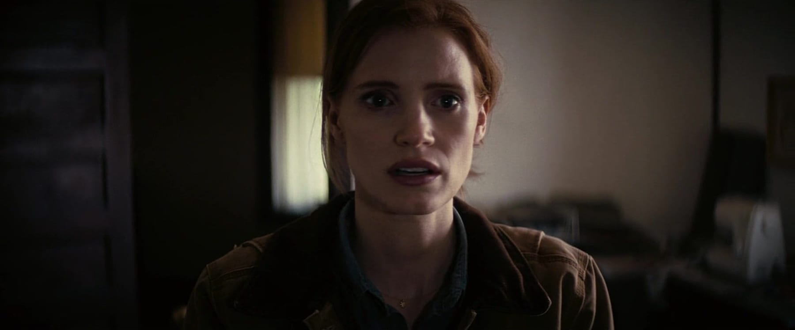

El Tesseract
La estructura imposible del final: desde adentro, el tiempo es un pasillo. Cooper la usa para hablarle a Murph a través de los años, desde el otro lado de su estantería.
Qué es
No es un planeta. Es una construcción de más dimensiones que las tres habituales, a la que Cooper cae después de soltarse de la nave y cruzar el horizonte de Gargantúa. Lo que esperaba ahí adentro era una singularidad; lo que encuentra es una retícula ordenada.
Desde adentro se ve como una repetición infinita de la habitación de Murph: el mismo cuarto en todos sus instantes, uno al lado del otro, como fotogramas de una película que se pueden visitar en cualquier orden. Las paredes son la parte de atrás de su estantería, vista a través de una maraña de hilos que son líneas de tiempo. El tiempo, acá, es una dirección más por la que moverse.
En la historia
Es el corazón del giro final. Cooper se dejó caer al agujero negro para aligerar la nave y que Amelia llegara a Edmunds; lo que parecía un sacrificio sin vuelta lo deposita acá. Y desde acá descubre que puede tocar el tiempo: mover la aguja de un reloj, empujar libros de un estante, marcar líneas en el polvo.
Con TARS mide la singularidad y usa la retícula para pasarle a Murph, en clave, los datos cuánticos que faltaban para resolver la ecuación de la gravedad. El canal es el reloj de pulsera que le regaló al irse: la aguja del segundero, moviéndose en código morse. El «fantasma» que Murph veía en su cuarto de chica —el que deletreó STAY en el polvo— era él, todo el tiempo, tratando de quedarse.
La película cierra su propio círculo: no hay alienígenas: son humanos del futuro los que construyeron el tesseract, y el puente que lo hace posible es el amor de un padre por su hija, capaz de atravesar dimensiones. Cuando el mensaje llega, la retícula se pliega y expulsa a Cooper de vuelta a nuestro lado.
Rasgos distintivos
- Una retícula que representa el tiempo como un espacio que se puede recorrer en cualquier dirección.
- Copias infinitas de la habitación de Murph, cada una en un instante distinto.
- La estantería de Murph vista «desde atrás»: el único punto de contacto con nuestro lado.
- La gravedad como medio del mensaje: lo único que Cooper puede empujar a través del tiempo.
- El reloj de pulsera como canal del dato final, transmitido en morse por el segundero.
- Construido —según la película— por una humanidad futura para que ese contacto sea posible.
En celuloide
La caída, la retícula y el mensaje a Murph en una tira que desfila sin cortes; el cursor o el foco la frenan para mirarla de cerca.










La ciencia
Tratar el tiempo como una cuarta dimensión que se puede recorrer viene de la relatividad: el espacio-tiempo es un bloque de cuatro dimensiones, no un presente que avanza. Sobre esa base, un tesseract es el nombre real de un hipercubo: un cubo de cuatro dimensiones. La retícula de la película es una forma de dibujar eso: si pudieras ver el tiempo «de costado», lo verías como un pasillo de instantes.
Lo que ya es licencia narrativa es que sea habitable, y que unos humanos del futuro lo hayan construido para cerrar el círculo. La física que sí se respeta es más sutil: Cooper solo puede mandar gravedad hacia atrás en el tiempo, porque la gravedad es la única de las fuerzas que —en varias teorías— podría filtrarse entre dimensiones. El dato viaja como fuerza, no como voz.